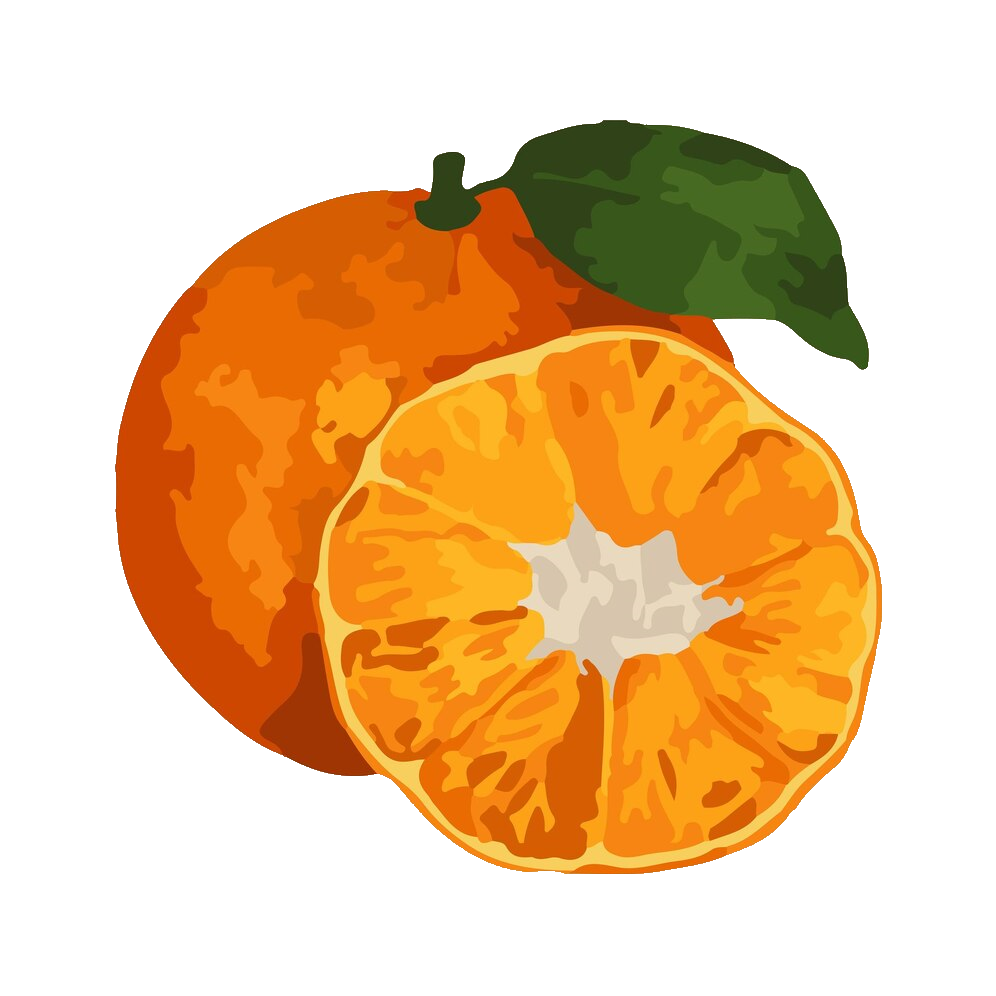

Segment-variation of Citrus Reticulata (tangerine)
An attempt to fill this statistical gap in research by Bucher et al.
Soon to be published at Nature (2023).
Add new data point
Statistics
| Total # of Fruits | |
| Total # of Segments | |
| Median # of Segments | |
| Mean # of Segments | |
| Standard Deviation |